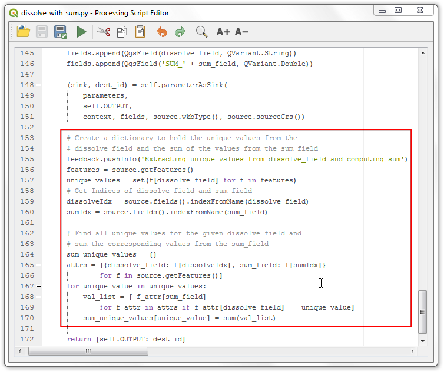

Werken met gegevens van WMS (QGIS3)¶
Vaak zult u moeten verwijzen naar gegevenslagen voor uw basiskaart of om uw resultaten weer te kunnen geven in andere gegevenssets. Vele organisaties publiceren gegevenssets online die voor direct gebruik in GIS gereed zijn. Een populaire standaard voor het online publiceren van kaarten is genaamd WMS (Web Map Service). Dit is een betere keuze om verwijzingslagen te gebruiken omdat u toegang krijgt tot rijke gegevenssets in uw GIS zonder het gedoe van het downloaden op opmaken van de gegevens.
Overzicht van de taak¶
Voor deze handleiding zullen we een WMS-laag laden van Urban Expansion to 2030 gepubliceerddoor het Socioeconomic Data and Applications Center (SEDAC).
Andere vaardigheden die u zult leren¶
Hoe de transparantie van een laag aan te passen en het toevoegen van een widget schuifbalk voor het beheren van doorzichtbaarheid in QGIS.
De gegevens ophalen¶
Bezoek de Global Grid of Probabilities of Urban Expansion by SEDAC, deze gegevens bevatten geschatte vooruitzichten voor wijzigingen in de globale stedelijke landbedekking van 2000 tot en met 2030 op een 2.5 arc-minute resolutie. Klik op Map Services.

Kopieer de URL voor de service WMS. Dit is de URL naar de WMS-service die de gegevenslaag host.

Procedure¶
Open QGIS en klik op Databronnen beheren openen.

Schakel, in het dialoogvenster Databronnen beheren, naar WMS/WMTS, klik op Nieuw.

Voer, in het dialoogvenster Nieuwe WMS/WMTS-verbinding maken het vak Naam onder Verbindingsdetails in als
SEDAC, en plak de gekopieerde URL in het tekstvak URL. Klik op OK. Als u een fout krijgt met de gekopieerde URL, probeer dan de alternatieve URLhttps://sedac.ciesin.columbia.edu/geoserver/ows.
Notitie
U maakt nu een nieuwe verbinding naar een WMS-service - niet naar een specifieke laag. Eén enkele service biedt gewoonlijk meerdere lagen aan di kunnen worden toegevoegd aan uw project.
Klik vervolgens, in het dialoogvenster Databronnen beheren, op de knop Verbinden. Alle beschikbare lagen zullen wordne geladen. U zullen de verschillende ID’s opvallen die zijn vermeld naast de lagen. ID
0betekent dat u een kaart van alle lagen krijgt. Als u niet alle lagen wilt, kunt u de lijst uitbreiden door te klikken op het pictogram ▸ en de laag van uw interesse selecteren. Selecteer voor deze handleiding de laag0.
Voor deze handleiding zijn we geïnteresseerd in een specifieke laag. Zoek naar
Probabilities of Urban Expansion to 2030. Selecteer de versie default van de laag urban expansion 2030.
In het gedeelte Afbeeldingsformaat moet u een indeling voor de afbeelding kiezen. Indelingen voor afbeeldingen zijn van groot belang en welke u kiest s afhankelijk van gebruiksdoel. Gebaseerd op ervaringen vanuit het perspectief van gebruikers zijn hier enkele hints,
Kwaliteit: Bestandscompressie voor PNG is verliesloos, voor JPEG is er een compressie met verlies en TIFF kan beide zijn. Dat betekent dat de kwaliteit van PNG’s beter zal zijn, vergeleken met JPEG. Als uw hoofddoel is om een kaart af te drukken, gebruik dan PNG.
Snelheid: Omdat PNG’s niet gecomprimeerd zijn en dus groter in grootte, zullen zij langer duren om te laden. Als u de laag in uw project gebruikt als een verwijzingslaag en veel moet inzoomen of verplaatsen, gebruik dan JPEG.
Cliënt-ondersteuning: QGIS ondersteunt de meeste indelingen, maar als u toepassingen voor het web ontwikkelt, browsers ondersteunen TIFF gewoonlijk niet, dus zou u een andere indeling moeten kiezen.
Type gegevens: Als uw lagen primair vector zijn zal PNG betere resultaten geven. Voor luchtfoto’s is JPEG gewoonlijk een betere keuze.
Kies, voor deze handleiding, PNG als de indeling. Wijzig de Laagnaam als u dat wilt en klik op Toevoegen.

Nu zult een laag Probabilities of Urban Expansion to 2030 zien geladen in het kaartvenster. Gebruik de gereedschappen Zoomen/Verplaatsen om de laag te verkennen. De manier waarop de WMS-service werkt is dat die, elke keer dat u zoomt/verplaatst, uw weergavecoördinaten naar de server zendt en de server maakt een afbeelding voor die weergave en stuurt die terug naar de cliënt. Er zal dus enige vertraging optreden voordat u de afbeelding ziet voor het gebied, nadat u daarop ingezoomd hebt. Daarom is altijd een internetverbinding vereist om toegang tot deze laag te krijgen.

Zoom nu naar een bekende plaats en klik op het pictogram Objecten identificeren op de werkbalk.

Klik op een willekeurige pixel in het kaartvenster, het zal een dialoogvenster tevoorschijn laten komen met de waarde van de cel. Dit is de waarde van de pixel in de laag - wat de waarschijnlijkheid weergeeft voor het feit of de pixel zal zijn bevolkt in 2030. Omdat de laag niet lokaal is opgeslagen worden deze waarden opgehaald vanaf de serviceprovider. U kunt het resultaat beter zien door de Indeling te selecteren als
HTMLen Weergave asBoom.
Notitie
De informatie wordt opgehaald door GetFeatureInfo, het is een WMS standaard aanroep die het voor ons mogelijk maakt informatie op te halen over objecten en bedekking die wordt weergegeven op de kaart. Als de kaart is samengesteld uit verscheidene lagen, en GetFeatureInfo kan worden geïnstrueerd om meerdere beschrijvingen van objecten terug te geven, is HTML/GeoJSON de gebruikelijke bestandsindeling waarin de informatie wordt opgehaald.
Klik met rechts, om de aanvullende informatie over de laag te bekijken, op de laag en selecteer Eigenschappen….

Schakel, in het dialoogvenster Laageigenschappen, naar de tab Informatie waar alle informatie, zoals gegevensprovider, projecties, bereik, is te vinden. Klik op OK om het dialoogvenster te sluiten na het verkennen.

Zoek, in QGIS Browser, naar XYZ Tiles en klik en sleep
OpenStreetMapnaar het kaartvenster.Klik op het pictogram Paneel Laag opmaken openen en schakel naar Transparantie.

Stel de Globale doorzichtbaarheid in op
50 %Nu kan, in het kaartvenster, de laag Urban worden verkend met geografische verwijzingen.

Klik met rechts, om meer toegang te krijgen tot de transparantie van de laag, op de laag en selecteer Eigenschappen….

Schakel, in het dialoogvenster Laageigenschappen, naar de tab Legenda, selecteer
Doorzichtbaarheid schuifbalkonder Beschikbare widgets en klik op het pictogram Geselecteerde widgets toevoegen. Klik op OK.
Nu zal een widget Schuifbalk beschikbaar zijn om de doorzichtbaarheid van de laag te beheren.